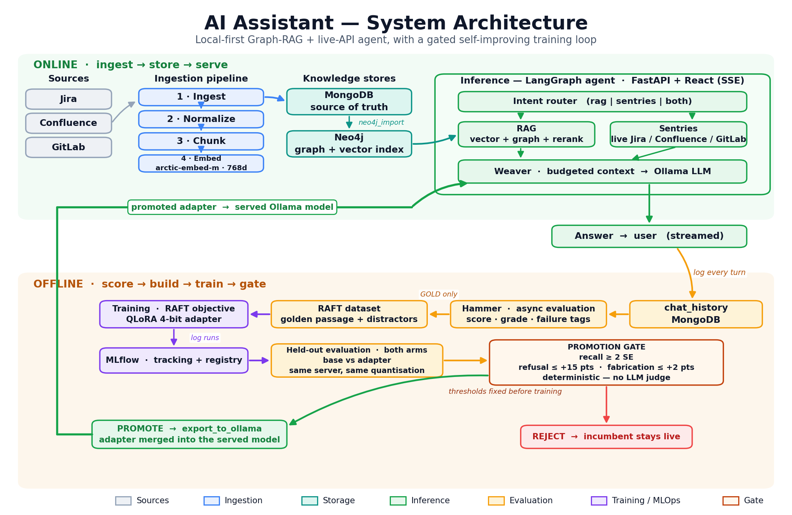

Retrieval that cites its sources, agents that call real APIs, evaluation loops that
catch their own mistakes, and fine-tuning that fits on a 6 GB GPU. Final-year
Data Science & AI engineer (Dipl. d'Ingénieur, 2026), currently
AI Engineer Intern at TELNET Holding.
Enterprise AI Assistant — hybrid Graph-RAG with a self-improving evaluation loop
Problem Engineers lose hours a week manually re-checking Jira, Confluence and GitLab — and don't trust a generic chatbot's answers enough to rely on them.
Solution An on-prem assistant that answers from a Neo4j knowledge graph and the live APIs at once, cites verifiable sources, and continuously fine-tunes itself on the team's own data.
2.4×faster answers (7.3→3.0 s)
+27%model faithfulness
1.28 Mvector chunk nodes
~424kJira issues in graph
20+typed relationships
~24 GBembedded corpus
Execution
Hybrid Graph-RAG: vector search over 1.28 M chunks in Neo4j + multi-hop traversal of typed relationships (BLOCKS, CHILD_OF…) + cross-encoder reranking, so an answer cites why a ticket matters, not just that it's similar.
Agentic routing: a bilingual (EN/FR) LangGraph agent with a deterministic ~30-rule NL→API compiler (JQL / CQL / GitLab REST), parallel dispatch and per-project fan-out caps for live data.
Self-improving loop ("Hammer"): RAGAS + deterministic validators score every answer, grade it GOLD→FAILED, mine QLoRA/DPO datasets, and gate any fine-tuned adapter behind a benchmark before promotion via MLflow.
On-prem, low-cost discipline: 4-bit QLoRA + gradient checkpointing fit the whole fine-tuning loop on a single 6 GB consumer GPU — no data leaves the building, and cost doesn't scale with usage.
Debugged for production: fixed a silent prompt-overflow (12.6k→5.7k tokens) and an evaluation defect that was mislabelling correct answers and poisoning the training set — the fix lifted faithfulness a measured 27%.

The closed loop: ingestion → graph + live retrieval → agent → Hammer scoring → QLoRA/DPO → back to the served model.
Autonomous drivingAWS SageMaker · nuScenes · Jul – Oct 2025
Autonomous-Vehicle Perception & Planning — a full ADAS decision stack
Problem Forward-collision warning and automatic braking need one loop — perceive → predict → decide — that normally spans two specialist teams (perception and planning).
Solution That whole vertical slice, owned solo: camera detection + a LiDAR planner fused into a real CLEAR / CAUTION / BRAKE decision, with a vision-language model that explains and voices it.
Execution
Perception: a fine-tuned YOLOv8 camera detector plus a custom bird's-eye-view multi-task LiDAR planner (3 trajectory modes × 20 waypoints).
Decision: a pure-NumPy fusion layer walks the predicted path through the LiDAR obstacle map → distance, time-to-collision, and a CLEAR/CAUTION/BRAKE signal.
Neuro-symbolic layer: a local VLM (Qwen2.5-VL via Ollama) reasons over the 6-camera surround + BEV to flag open-vocabulary hazards and speak an instruction to the driver.
Cloud → local: trained on ~200 GB of nuScenes on AWS SageMaker; ships as a runnable Streamlit app, a risk-monitor video and a per-scene PDF safety report.
The onboard co-pilot narrates each scene aloud — tap to hear it read the live driving assessment (same Web-Speech TTS the app ships with).
Live Scene Dashboard — YOLO camera detections + BEV planned path vs. LiDAR obstacles → real-time CLEAR / CAUTION / BRAKE with distance & time-to-collision.
Problem Producing timely, on-trend social content is a manual chain — find the trend, research it, write it, post it.
Solution A CrewAI multi-agent pipeline that automates the whole chain from a single niche keyword to five posted tweets.
Execution
Three sequential agents (trend research → content research → copywriting) on LLaMA-3.3-70B via Groq, each output feeding the next.
Real tools: Google Trends (pytrends), Serper search and a scrape-and-summarize browser — with guardrails that cap tool loops and API spend.
Deterministic hand-off: a structured-output step turns the crew's result into clean JSON, then Tweepy posts each tweet via the X API.
python main.py
## Welcome to the Twitter Content Creation Crew
What is your niche? AI Assistants[Trending Topic Researcher] Starting task…
Action: GoogleTrendsTool Input: {"niche":"AI Assistants"}
[Content Researcher] Deep research across the open web…
[Twitter Content Creator] Drafting 5 tweets → parsing to JSON…
✓ Tweet posted successfully.
Sample generated tweet
AI
Content Crew
@iyed_ai · now
AI assistants are quietly moving from “chat box” to “does-the-work” agents. The winners won't have the smartest model — they'll have the best tools + memory + evaluation loop. Build for reliability, not demos. #AI #LLM #Agents
Problem An online store needs to help shoppers find visually-similar products and check out securely, with a real back-office behind it.
Solution A complete MERN storefront with an image-similarity recommender, secure payments, and a full admin panel.
Execution
Image-based recommender: VGG16 feature extraction + PCA + KNN over 50k+ product images, served through a Flask API for visually-similar product discovery.